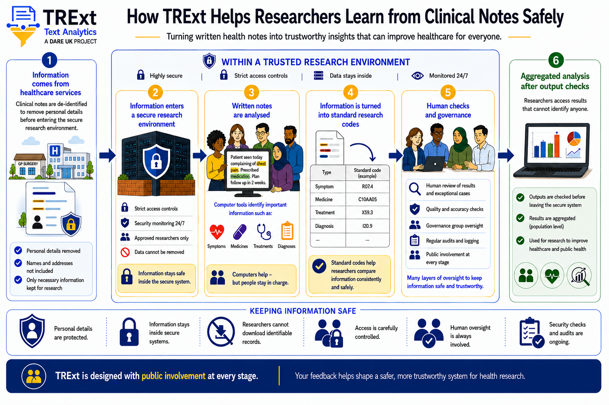

Public Involvement & Engagement
Working with the public throughout TRExt to ensure federated text analytics reflects societal values, addresses privacy concerns, and earns public trust.
About Our PIE Programme
Public Involvement and Engagement (PIE) is woven throughout TRExt. Our programme is guided by the DARE UK PIE Guidelines and aligned with best practice promoted by PEDRI (Public Engagement in Data Research Infrastructure). Our PIE Lead, Claire Newman at the SAIL Databank (Swansea University), brings extensive expertise in public engagement for data-intensive health research and manages Swansea's SAIL Consumer Panel.
PIE activities in TRExt are structured to ensure public perspectives genuinely shape decisions about how clinical documents are handled, how information is safely extracted from text, and how findings are communicated. A member of the public also chairs the project's management meetings.
How TRExt Keeps Data Safe
This infographic was co-designed with input from public members during a workshop, illustrating how TRExt protects sensitive clinical text while enabling safe research.

PIE Leadership
Claire is a leading public-engagement specialist in data-intensive health research. She manages the SAIL Consumer Panel and has pioneered hybrid workshops and multimedia consultations adopted as best practice across DARE UK and HDR UK. Her Consumer Panel framework ensures patient and public perspectives meaningfully inform data-intensive research at every stage.
Planned Activities
PIE activities are planned across the full 12-month project timeline, engaging diverse public voices at each phase.
Before work begins, the Project Management Team consults with SAIL Databank's Public and Patient Panel to review and co-shape the TRExt PIE strategy. The PIE strategy is treated as a live working document, not a fixed plan.
Objective: Ensure the PIE programme itself is co-designed with public contributors from day one.
An all-team hackathon to align on tools, integration strategies, and technical architecture. Public representatives are briefed on project goals. The RRI (Responsible Research and Innovation) action plan begins to take shape.
Objective: Rapid team alignment and early public introduction to the project.
A Responsible Research and Innovation action plan is developed and reviewed by the Scientific Advisory Board. This covers ethical use of LLMs for clinical data mapping, transparency in algorithmic decision-making, and strategies for communicating AI-assisted processes to clinical and public audiences.
Objective: Establish ethical guardrails for TRExt's AI-assisted components before development peaks.
A series of three online workshops, attended by members of the public balanced for ethnicity and gender. Workshops introduce the project and gather opinions on: the use of NLP to extract concepts from clinical text, the use of LLMs to assist data mapping, and how the outcomes from the project can be optimally communicated to a public audience.
Objective: Co-design technical methodologies with public contributors and capture trust and concerns.
An anonymised report summarising the views, concerns, and recommendations gathered across all workshops. This report is shared with the full project team and directly informs projct design decisions.
Objective: Translate public input into concrete, documented changes to technical design.
A final technical report covering TRExt's accomplishments, challenges, and recommendations, alongside a public-facing summary of the PIE programme's findings. Both documents are shared openly with the DARE UK community and public.
Objective: Leave a lasting record of public perspectives and technical lessons for future DARE UK projects.
PIE Resources
DARE UK PIE Guidelines
Public Involvement and Engagement guidelines for DARE UK projects, informing TRExt's PIE strategy.
PEDRI
The national network for public engagement in data research, supporting best practice in PIE activities across UK data programmes.